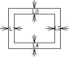
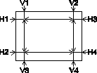

|
Item |
Signal |
Standard (User Specification) |
Display Area
Size |
Signal No.a |
H:388 +4, -6mm
V:291 +2.5, -6mm |
|
Picture Centering |
|L1-L2|< 6mm
|L3-L4|< 6mm
 |
|
Full Scan |
100% Scanned in each signal. |
|
Distortion |
- Top/Bottom
Pin Distortion : within 2.0mm
Barrel : within 1.5mm
- Right/Left
Pin Distortion : within 2.0mm
Barrel : within 1.5mm
|
|
Trapezoid |
Signal No.a
All direction |
|V1-V2|<3.0mm
|V3-V4|<3.5mm
|H1-H2|<3.0mm
|H3-H4|<3.0mm
 |
|
Convergence |
Signal No.h |
Center (C-Point): within 0.20mm
Preset Area: within 0.30mm
(Display Size 388 x 291mm) |
|
Color Purity |
Signal No.h
100% scan |
Conspicuous different colors shall not be recognizable in all
directions.
(When degaussing the CRT surface and around the monitor with
a degaussing bar, execute "Reset" in "Uniformity"
of ScreenManager.) |
|
Brightness |
Signal No.h |
PEAK(9300K)
>35ft-L
ABL(9300K)
>27ft-L
*Contrast and Brightness Max |
|
White Balance |
Signal No.h
White window
Black-field |
WINDOW
(9300K)
X=0.283±0.025
Y=0.297±0.025
(6500K)
X=0.313±0.025
Y=0.329±0.025 |
White
Uniformity |
Signal No.h
White-field
Standard Size |
Center color coordination (Xc, Yc) at 9300K :
Within ± 0.020 (in all directions) |
Bright
Uniformity |
Standard size
Bi/A*100>60 % (i: 1~4) |
|
Focus |
Resolution
1600x1200 |
All characters to be clearly recognized in Excel focus pattern. |
|
Linearity |
Signal No.a |
H: within ± 5.5%
V: within ± 5.5%
(Screen size is standard.) |
|
Ringing |
The ringing is not recognizable in the display area. |
|
Tracking |
Conspicuous white change shall not be recognizable. |
|
Smear |
Smeared image shall not be recognizable at the right of the letters. |
|
Flickering |
Not recognizable. |
|
Jitters |
Conspicuous vertical jitter shall not be invisible from the distance
of 50 cm from CRT surface with the cross-hatch and focus pattern. |
|
Top curl |
Top curl is within 0.5mm at the top edge of the display area. |
|
Shock test |
Not extraordinary in the display area (no noise, etc.). |
|
Power test |
Not extraordinary in the display area. |
|
Missing |
Refer to the "Section1 [User
Specification 4. CRT SPECIFICATIONS]". |
|
SW ON/OFF Test |
Not extraordinary. |
|
Microprocessor Function check |
Each microprocessor function operates correctly. |
Direct SW
check |
Signal No.h |
After turning each SW ON, each adjustment function operates correctly. |
|
DDC |
signal from PC
with MD-C87 |
The DDC function works correctly . |
|
Leading |
TEST Signal |
fH: 30KHz~130KHz
fV: 50Hz~160Hz |
|
Default setting |
- |
Refer to Default Settings |
|
Appearance, Structure |
- |
- Screw, SW, etc.
a. Not lacked.
b. SW works smoothly.
- Check the dirt, scratch, dust, dent, spots, etc. under the
Fluorescent light.
- Space between the CRT and the bezel CRT bottom: under 0.7mm
CRT top, left and right: under 1.0mm
- Not extraordinary with the Name Plate
- Inlay is not lacked. The red line is faced to left and bottom.
|
|
Accessory check |
- |
Refer to Packing
Drawing |
|
Operation Test |
- |
Display image appears within 15 seconds. No extraordinary by
then. |